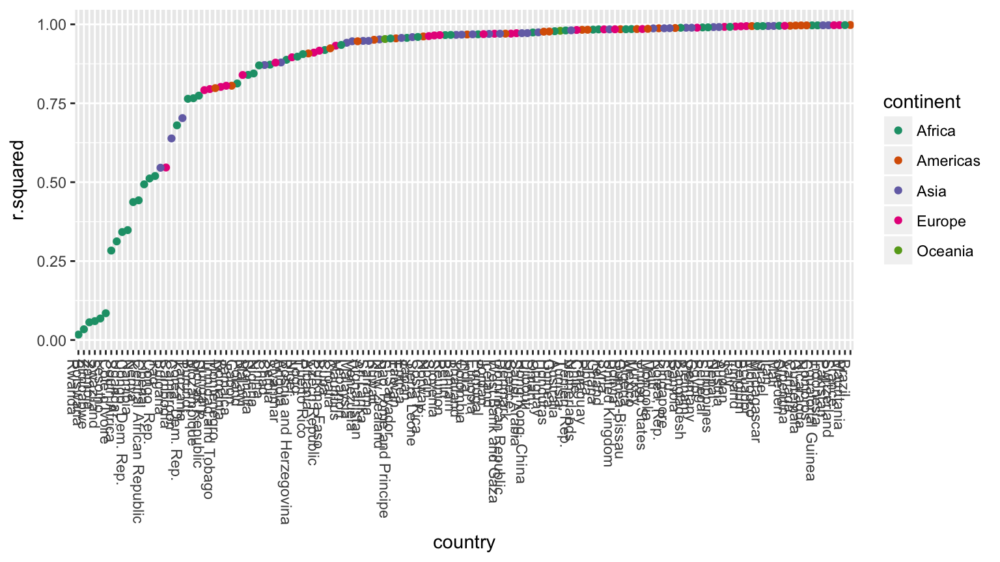
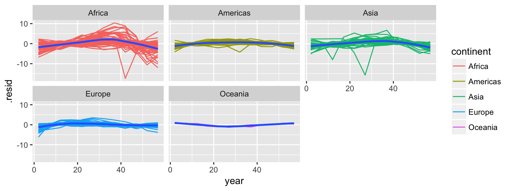
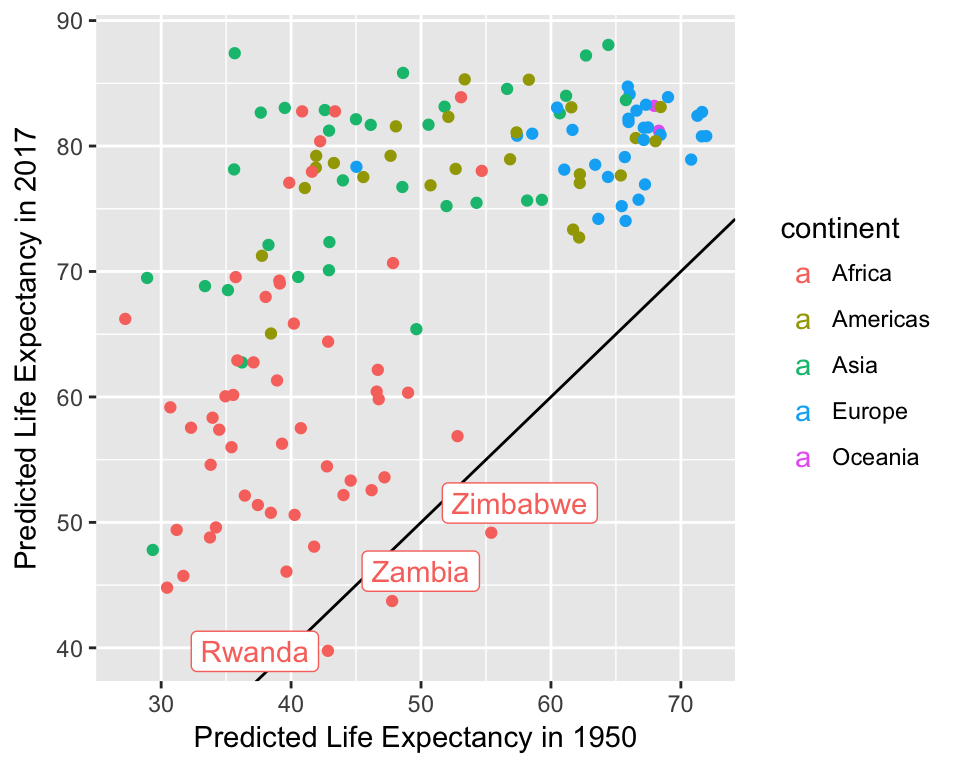

Heike Hofmann
countryList <- countryList %>% unnest(model %>% purrr::map(broom::glance))
countryList$country <- reorder(countryList$country, countryList$r.squared)
countryList %>%
ggplot(aes(x = country, y = r.squared, colour=continent)) +
geom_point() +
theme(axis.text.x=element_text(angle=-90, hjust=0)) +
scale_colour_brewer(palette="Dark2")
countryFit <- countryList %>% select(country, continent, data, model) %>%
mutate(fitted = model %>% purrr::map(broom::augment)) %>%
select(-model) %>% unnest()
countryFit## # A tibble: 1,704 × 15
## country continent year lifeExp pop gdpPercap lifeExp year
## <fctr> <fctr> <dbl> <dbl> <int> <dbl> <dbl> <dbl>
## 1 Afghanistan Asia 2 28.801 8425333 779.4453 28.801 2
## 2 Afghanistan Asia 7 30.332 9240934 820.8530 30.332 7
## 3 Afghanistan Asia 12 31.997 10267083 853.1007 31.997 12
## 4 Afghanistan Asia 17 34.020 11537966 836.1971 34.020 17
## 5 Afghanistan Asia 22 36.088 13079460 739.9811 36.088 22
## 6 Afghanistan Asia 27 38.438 14880372 786.1134 38.438 27
## 7 Afghanistan Asia 32 39.854 12881816 978.0114 39.854 32
## 8 Afghanistan Asia 37 40.822 13867957 852.3959 40.822 37
## 9 Afghanistan Asia 42 41.674 16317921 649.3414 41.674 42
## 10 Afghanistan Asia 47 41.763 22227415 635.3414 41.763 47
## # ... with 1,694 more rows, and 7 more variables: .fitted <dbl>,
## # .se.fit <dbl>, .resid <dbl>, .hat <dbl>, .sigma <dbl>, .cooksd <dbl>,
## # .std.resid <dbl>countryFit %>%
ggplot(aes(x = year, y = .resid)) +
geom_line(aes(group = country, colour = continent)) +
geom_smooth(method="loess") +
facet_wrap(~continent)
countryList <- countryList %>%
select(country, continent, data, model) %>%
mutate(
le2017 = model %>%
purrr::map_dbl(function(m) predict(m, newdata=data.frame(year=67)))
)
countryList <- countryList %>% mutate(
coefs = model %>% purrr::map(broom::tidy)
)
countryCoefs <- countryList %>% unnest(coefs) %>% select(country, continent, le2017, term, estimate) %>% spread(key=term, value=estimate)countryCoefs %>%
ggplot(aes(x = `(Intercept)`, y = le2017, colour=continent)) +
geom_abline() +
geom_point() + xlab("Predicted Life Expectancy in 1950") +
ylab("Predicted Life Expectancy in 2017") +
ggrepel::geom_label_repel(aes(label = country),
data = countryCoefs %>% filter(`(Intercept)` > le2017))